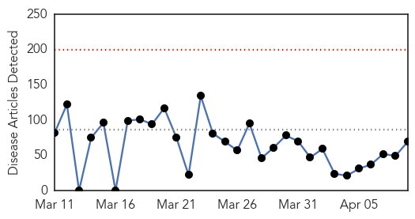
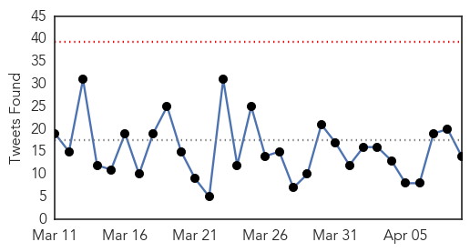
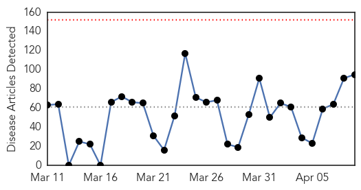
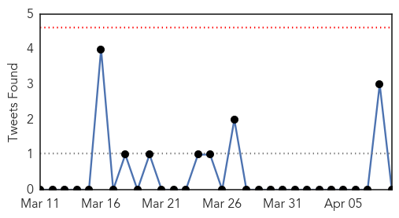
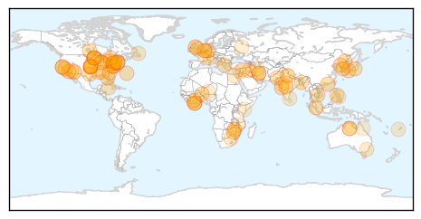

Ebola
30-Day Web Trend
0 alerts, 0 warnings

30-Day Twitter Trend
0 alerts, 0 warnings

Article Locations

Article Confidences

Top Articles:
- 0.999
- New Ebola cases hit lowest in a year
- 0.999
- Preparing for next epidemic
- 0.999
- Obama, Advisors Discuss Ways to Get Ebola Cases to Zero
- 0.998
- Ebola virus: Liberia watchdog says $800,000 in funding for fight against outbreak unaccounted for
- 0.998
- WHO: 30 cases of Ebola in 3 West African nations lowest in a year
- 0.998
- 30 new Ebola cases, lowest weekly figure in nearly a year: WHO
- 0.997
- Liberia names new health minister as it seeks to beat Ebola
- 0.996
- Former Leamington doctor reports back after Ebola work
- 0.996
- Pros and cons of Sierra Leone's Ebola lockdowns
- 0.996
- Pros and cons of Sierra Leone's Ebola lockdowns
- 0.996
- New Ebola test gives results in 11 minutes
- 0.996
- Sierra Leone residents team up against Ebola
- 0.996
- REVIEW: Hard lessons from Ebola crisis
- 0.994
- Partners in Health clinician declared Ebola-free
- 0.992
- San Francisco Bay View A Ugandan doctor describes the real ‘Ebola Hot Zone’
- 0.991
- Health Ministry inspects Tema General Hospital Ebola centre
- 0.991
- Squabbles Over Testing Methods Hamper Search for Ebola Vaccine
- 0.989
- President Mahama calls for debt cancellation for Ebola countries
- 0.989
- Ebola Active Monitoring System for Travelers Returning from West Africa — Georgia, 2014–2015
- 0.989
- New Ebola study points to potential drug target
- 0.988
- President Mahama Calls For Debt Cancellation For Ebola Countries
- 0.985
- Suspected Ebola patient dies after being denied treatment
- 0.984
- Japanese Ebola test gives results in 11 minutes
- 0.983
- CNN covers up government plan to put Ebola patients in U.S. hotels
- 0.982
- NIAID determines Ebola vaccines safe
- 0.972
- Tulane/Lassa Fever Programme hands over Rehabilitated Annex Ward to Ministry of Health - Sierra Leone
- 0.970
- Goodwill Ambassador Isatu Timbo-Nwokedi brings Hope to EBOLA Widows
- 0.968
- MOH Post-Ebola Gets US$25,000 Medical Supplies
- 0.967
- German Missions in the United States
- 0.967
- Maine Poorly Prepared to Deal with Disease Outbreaks
- 0.966
- US clinician cured of Ebola, leaves hospital
- 0.965
- Guinea: Ebola survivor turns to help his community recover in Guinea
- 0.958
- US clinician cured of Ebola, leaves hospital
- 0.952
- Miner donates Ebola support package
- 0.950
- New single-dose Ebola vaccine shows promise
- 0.949
- 138 suspected Ebola cases tested in Ghana
- 0.945
- Japanese Scientists Invent 11-Minute Ebola Tests : News : News Every Day
- 0.941
- Outcome from the Kailahun EVD Positive Case Investigation - Sierra Leone
- 0.939
- Hon . Kai-Kai highlights President Koroma’s extraordinary sacrifice for his nation
- 0.936
- PIH, Sierra Leone Address Needs of Pregnant Women amid Ebola
- 0.935
- Can Camels Cure MERS?
- 0.934
- Ebola Vaccines Protect Monkeys
- 0.932
- Ebola crisis in Sierra Leone masks other health woes
- 0.931
- Another experimental drugs arrive for Ebola
- 0.927
- Vanderbilt Joins National Effort to Speed Ebola Therapy Testing
- 0.926
- Vanderbilt researchers join multi-center effort to accelerate development of potential Ebola therapy
- 0.921
- Japanese Ebola Test Gives Results in 11 Minutes — Naharnet
- 0.921
- Welcome to the Expotimes News
- 0.914
- Japanese Ebola test gives results in 11 minutes
- 0.902
- Disease, outbreak and control expert speaks at KSC
Showing top 50 articles...
Top Tweets:
- 0.986
- Cuban. Doctor. Ebola survivor - World Health Organization http://t.co/miyI2ArgdQ ebola EVD
- 0.979
- RT: Ebola in Sierra Leone masks other health woes: 3000 have died from Ebola; 39,000 kids <5 die each yr from disease, http://t.c…
- 0.968
- Ebola crisis in Sierra Leone masks other health woes - USA TODAY http://t.co/fqXye6rZKq ebola EVD
- 0.885
- MOH Post-Ebola Gets US$25000 Medical Supplies - Liberian Daily Observer http://t.co/PqSwTX3Thr ebola EVD
- 0.884
- New Ebola study points to potential drug target - Medical Xpress http://t.co/hz0jlVwTZn ebola EVD
- 0.868
- Seven districts in SierraLeone have now been free of the Ebola Virus Disease for more than 42 days. EbolaResponse http://t.co/xdMBEGmpye
- 0.863
- Patient treated for Ebola at NIH has recovered - Washington Post http://t.co/r40lqjEWXq ebola EVD
- 0.858
- Ebola Update: 25,515 confirmed, probable and suspected cases reported in 3 most affected countries, with 10,572 deaths. EbolaResponse
- 0.857
- Liberia watchdog says some Ebola funds unaccounted for - Business Insider http://t.co/WfaCCqNg7g ebola EVD
- 0.849
- American who contracted Ebola discharged from hospital - MyFox Washington DC http://t.co/bmkdnTH8bm ebola EVD
- 0.824
- Japanese Ebola test gives results in 11 minutes: researcher - Medical Xpress http://t.co/IfoK9FCRD1 ebola EVD
- 0.806
- “Ebola has challenged and broken relationships. We have to help fix them.” - International Federat... http://t.co/UAAjvI3Oxw ebola EVD
- 0.799
- Nurse back from treating Ebola patients in Africa - http://t.co/uhgn8cyfCB http://t.co/fdUdSmdhDF ebola EVD
- 0.780
- Some Ebola Victims Concerned They'll Never Get International Aid - Voice of America http://t.co/r1UfpaKZun ebola EVD
- 0.770
- so ebola in 1982 = obscure/irrelevant? seems odd
- 0.707
- An Artist's Brainstorm: Put Photos On Those Faceless Ebola Suits - NPR (blog) http://t.co/7imvnStwCx ebola EVD
- 0.687
- Filovirus epidemic in 1956 in Bili, DRC ebola http://t.co/0bouFPWf6z
- 0.684
- Japanese Ebola test gives results in 11 minutes: researcher - Yahoo News http://t.co/02CARchDpe ebola EVD
Unknown
30-Day Web Trend
0 alerts, 0 warnings

30-Day Twitter Trend
0 alerts, 0 warnings

Article Locations
Article Confidences

Top Articles:
- 0.982
- Health Ministry: Increase In Chicken Pox Reports
- 0.972
- CFIA Pinpoints Strain Responsible for Oxford County’s Avian Flu Outbreak
- 0.962
- The Kathmandu Post :: 3 die, 500 down due to FLU-like disease
- 0.960
- As Drug-Resistant Bug Spreads Through California, No Cases...
- 0.952
- Connecticut researchers monitoring distribution of rare, non-treatable virus
- 0.946
- Niger isolates bird 'flu farm' as region takes precautions
- 0.944
- Niger isolates suspected bird flu farm as region takes precautions
- 0.939
- UPDATE 1-Niger isolates suspected bird flu farm as region takes precautions
- 0.937
- Niger isolates suspected bird flu farm as region takes precautions
- 0.935
- Chickenpox and intestinal bug cases increase
- 0.929
- Hog disease spread slows in Canada
- 0.918
- Sudden diarrhea outbreak sends hundreds to hospital
- 0.917
- Chicago Tribune
- 0.917
- Chicago Tribune
- 0.917
- Chicago Tribune
- 0.917
- Chicago Tribune
- 0.917
- Chicago Tribune
- 0.917
- Chicago Tribune
- 0.917
- Chicago Tribune
- 0.917
- Chicago Tribune
- 0.917
- Chicago Tribune
- 0.917
- Chicago Tribune
- 0.917
- Chicago Tribune
- 0.917
- Chicago Tribune
- 0.917
- Chicago Tribune
- 0.917
- Chicago Tribune
- 0.917
- Chicago Tribune
- 0.917
- Chicago Tribune
- 0.917
- Chicago Tribune
- 0.917
- Chicago Tribune
- 0.917
- Chicago Tribune
- 0.917
- Chicago Tribune
- 0.914
- Broke-Zimbabwean Govt fails to Fight Foot and Mouth … As the Elite Seek Medicals in Asia
- 0.908
- Despite vaccination, 2 polio cases surface in Sargodha
- 0.890
- Canada Expands Turkey Farm Quarantine to Stem Bird Flu — Naharnet
- 0.886
- New Deadly Tick Disease Worse Than Lyme
- 0.884
- Seafood Safety 101: Vibrio in Shellfish
- 0.872
- Betting the Lexington Stakes on a $20 Budget (también en Español)
- 0.862
- U.S. bird flu outbreak accelerates as wild ducks migrate north
- 0.853
- If you had chickenpox, watch out for shingles
- 0.852
- Ticks bringing another illness to Connecticut
- 0.846
- A US bird flu outbreak is accelerating as wild ducks migrate north
- 0.834
- Doctors issue warning about new tick virus found in CT
- 0.821
- First report of a new crop virus in North America
- 0.804
- CVS Health Announces New Clinical Affiliations with Leading Medical Centers in Arizona and Illinois
- 0.769
- Cayman claims low record of food poisoning
- 0.735
- SgMaV-1: New Switchgrass Crop Virus Discovered In North America
- 0.724
- Dinniman to Speak at Film on Lyme Disease
- 0.720
- Tuberculosis update
- 0.715
- Bird flu affects farm assets, not food safety
Showing top 50 articles...
Top Tweets:
- 0.569
- .@WHO updates on recent MERS cases. 5 of 12 are expats, which underscores the potential this virus could travel. http://t.co/ghxq9lJnTm